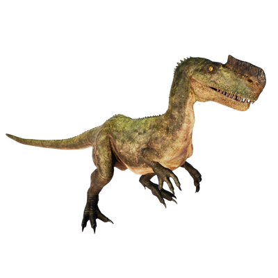

Useful Website
Named after the eye-catching crest on the front of its head – its name translates to ‘single-crested lizard’ – Monolophosaurus is a carnivorous theropod that dates back to the Mid Jurassic period. This genus is a relative of the fearsome Allosaurus, but smaller in stature at approximately 5m in length and weighing from 450kg to 680kg.
